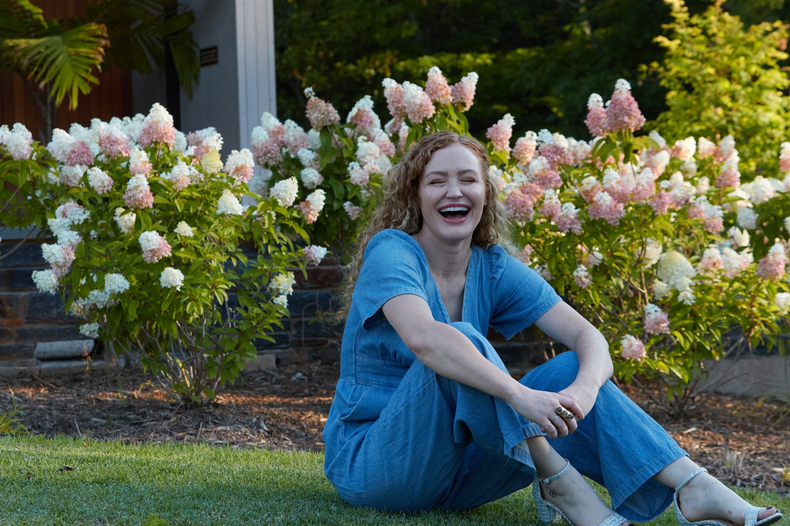

Coaching
1:1 and small-group trauma recovery coaching through Conscious Coaching Collective, PLLC.
About Carrie Davidson
The nurse who became her own patient.
BSN, RN · Certified Trauma Recovery Coach · Author of Addicted to Trauma
You can be high-functioning and still be run by trauma: I know, because I was the nurse everyone trusted with their worst moments, and I couldn’t get off my own floor. I’m a registered nurse (BSPH, BSN, RN) and certified trauma recovery coach specializing in the overlap of complex trauma and addiction. I was trained in the science of both, then I lived the far side of both. That combination isn’t a footnote to my work. It is the work.

In brief
The whole picture, before the longer story further down.
Current work
1:1 and small-group trauma recovery coaching through Conscious Coaching Collective, PLLC.
The Sunday Letter each week, plus essays on trauma, ADHD, and the nervous system.
Addicted to Trauma, releasing Summer 2026: the story beneath all of it.
Training & credentials
Why the credentials matter: they let me speak the clinical language of trauma and addiction while occupying the coaching lane: present, forward, and beside you, not above you.
A Bachelor of Science in Nursing and active RN licensure. Years at the bedside taught me how stress, trauma, and the body’s chemistry actually interact: the HPA axis, cortisol, and the nervous system, not as theory but as something I watched play out in real people, every shift.
A Bachelor of Science in Public Health, the wider lens. It trained me to see patterns across populations, not just individuals: how trauma and addiction move through families, systems, and generations, and why shame is such a poor tool for changing any of it.
Formal training in trauma-informed, recovery-focused coaching. This is the lane I work in now: not diagnosis or treatment, but skills, regulation, and companionship: walking beside you as you build a new pattern, at the pace your nervous system can hold.
The credential no school issues. I have been inside the loop this work is designed to interrupt. I know what it is to understand your patterns perfectly and still be unable to stop. And I know the way out, because I walked it.
My story
For years I was the one who held everyone else’s crisis. In scrubs, I was steady, capable, trusted with the worst moments of strangers’ lives. I could read a monitor, name a chemical, explain to a frightened family exactly what was happening in a body under stress. From the outside, my life looked like competence.
What no chart recorded was the loop running underneath it: the reaching for relief, the pull toward chaos, the way calm felt more like danger than rest. I could have diagnosed it in someone else in a heartbeat. In myself, I only knew that I understood everything and could change nothing. That is the arithmetic of high-functioning trauma: the more capable you look, the more invisible the suffering becomes, even to you.
Trauma and addiction are not separate problems. They are the same wound, telling itself in two different languages.
The turning point wasn’t one rock bottom. It was slower and less cinematic than that: the humbling realization that I could not think my way out of a pattern that lived deeper than thought. The nurse in me had to step aside and let me become the patient: to stop explaining the wound and start feeling it, to give my own nervous system the new evidence I had spent a career giving everyone else.
Recovery, for me, was not the absence of the pattern. It was learning to meet it: to witness it without shame, understand its logic, interrupt it in my body, and slowly build a life that felt safe enough to stay in. That process became a method. The method became a book. And the whole of it became this work.
You do not have to think your way out. You have to feel your way home.

Because the women I most wanted to help were the ones who never showed up in an emergency room: the high-achieving, high-functioning ones who look fine and are quietly exhausted by patterns they can name but can’t break. Therapy veterans. Insight-rich and transformation-poor. The people I recognized, because I was one of them.
Coaching lets me be what I needed and couldn’t find: someone who speaks the clinical language and has walked the loop from the inside. Not a distant expert. A companion who has been there and knows the way home.
You are not broken. You are patterned. And patterns can change.
Coaching philosophy & scope
My philosophy is simple: you are not broken, you are patterned, and patterns can change. I work present-and-forward, giving your nervous system new evidence rather than asking you to explain the wound one more time. It all lives under one roof, Conscious Coaching Collective, PLLC, where the coaching, the memoir, and the free resources share a single thesis: trauma and addiction are the same wound in two languages, and the way out is built in the body, over time.
Because I hold clinical training and a coaching role at once, I want the boundary between them to be completely clear:
You can reach the practice directly at coaching@carriepdavidson.com.
If any of this sounds like you
If you recognized yourself in any of this (the competence hiding the chaos, the understanding that changed nothing) I’d be honored to walk beside you while your body learns something new. Not ready to talk yet? The Sunday Letter brings this same voice to your inbox each week.